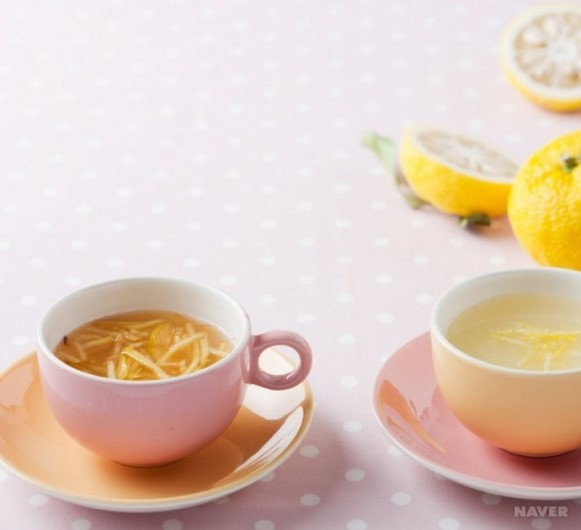

기관지에 좋은 모과차 만들기
모과차 만드는 방법
- 가을에 잘 익은 모과를 깨끗이 씻어 물기를 없앤 뒤 길이로 4등분한다. 씨 부분을 도려내 채 썰거나 납작하게 썬다.
- 모과를 동량의 설탕에 버무려 병에 눌러 담고 여분의 설탕으로 위를 덮는다.
- 냄비에 설탕과 물을 동량으로 넣고 불에 올려서 젖지 말고 끓인다. 설탕이 녹은 후에 물엿이나 꿀을 넣어 약한 불로 10분 정도 끓인 다음 식혀서 시럽을 만든다.
- 2~3일이 지나 모과가 설탕에 절여져 병 윗부분에 공간이 생기면 3의 시럽을 병에 붓는다. 모과 조각이 위에 뜨지 않도록 하여 저장하며 1개월 후부터 먹을 수 있다.
- 4의 모과청 3에 물 2컵 정도를 넣고 10분가량 끓인 후 차로 마신다.

모과의 효능
- 근육을 부드럽게 하고 경락이 잘 통하게 하며 위를 편안하게 하며 습을 제거 하는 효능이 있다.
- 또 가래를 없애주어 한방에서는 감기나 기관지염, 폐렴 등의 약으로 쓰이기도 한다.
- 기침을 억제하는 효능을 지니고 있어 기침감기 예방과 치료에도 일정한 효과가 있다.
- 모과는 뼈를 튼튼하게 해주어 성조숙증인 아이들이 이른 2차 성장으로 인해 떨어진 성장률 촉진에도 도움이 된다고 한다.